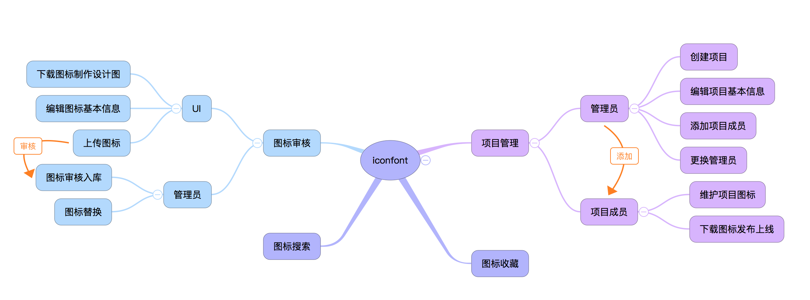

YIcon 是一个集图标上传、展示、使用于一身的字体图标管理平台。目的为采用 Iconfont 字体图标替换项目中图片图标的使用，以达到缩减体积、风格统一、提高开发效率等目的。不同的部门可以申请在平台上创建大库，业务线可以选择需要的图标添加到购物车，保存成项目之后进行维护。它可以方便的将 SVG 图标转换为字体图标，提供给 UI/UE 和前端开发使用。

优势 #
与传统制作图标的方式相比，它拥有如下优势：
- 严格的审核流程 图标上传后用户会进行一次编辑，之后会提交到审核，被大库的管理员审核通过后方能入库；
- 可控的项目版本 我们的项目每次变动之后再下载，就会生成新的版本，因此在项目中产生的所有版本都可以追溯查看；
- 完善的权限管理 我们拥有超管后台，可以自由的控制大库、项目管理员的权限。
编码控制 #
我们的字体使用的都是 unicode 编码，尽管大部分编码都有其固定作用，但 unicode 留出了一个『私用区』可以用来进行字体扩展，这一区域的码值范围是：E000 - F8FF。
我们的字体站规定的码值范围严格按照 unicode 私用区范围，每个上传的新字体都会从 E000 开始生成一个全站唯一固定的编码，之后就不会变动。这样用户在添加到项目或从删除删除时，图标的码值也不会发生改变，增强用户的体验。
尽管在 CSS3 支持了 font-face 的前提下，可以给图标字体加上特定样式以便确保其正确显示，但还是建议将码位落在私用区内以防止引起其他不必要的问题。因此我们字体站推荐的字体容量为 6400 个，在大多数场景下这个数量已足够使用。
如果某个图标废弃不用，可以采用替换的方式才修改其显示，以保证编码不被浪费。
如果你是去哪儿网内网用户，请直接访问该站点。